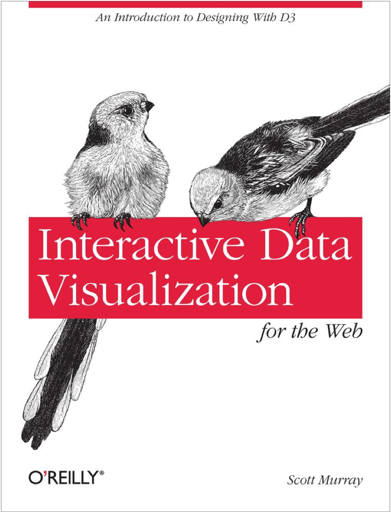

Quick Overview
Javascript visualization library
http://d3js.org/
Pletoric use cases / example :
http://bl.ocks.org/mbostock
http://christopheviau.com/d3list/gallery.html
One example
Four Ways to Slice Obama’s 2013 Budget Proposal

D3.js pros and cons
D3.js pros
General purpose visualization library
Interactivity and dynamicity
Basic maths & layout algorithms
Run in the browser
D3.js pros
In a scientific (or not) context : Explanatory visualization :
WC2014
Poisson disc
circle
color
radius
raw (last)
Sons of D3.js *
* not exhaustive
Reusable charts :
nvd3
Exploratory and multidimensional visualization :
dc.js
Submission time
Image Type
reset
Site
reset